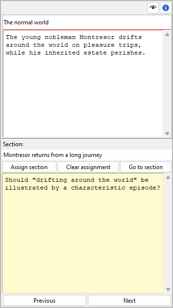

Plotpunkt-Eigenschaften
The Plotpunkt properties view öffnet sich im rechten Fenster when you select a plot point in the tree.

Titel und Beschreibung
Titel und Beschreibung werden als beschreibbare „Karteikarte“ dargestellt.
Die Bearbeitung von Die Bearbeitung des Titels kann mit der Eingabetaste beendet werden. Änderungen an der Beschreibung werden übernommen, sobald mit der Maus irgendwo außerhalb des Texteingabefelds geklickt wird.
Zugeordneter Abschnitt
You can connect the plot point to a section in the book. The label below „Abschnitt“ displays the section Titel.
- Abschnitt zuordnen
When clicking on the Abschnitt zuordnen Schaltfläche, the „Pick mode“ is activated, and the cursor changes to a „plus“ shape. By clicking on a section, this section will be assigned to the plot point.
Hinweis
You can exit the „Pick mode“ without selecting a section by clicking on the highlighted status bar, or by pressing the
Esckey.- Zuordnung löschen
If a sectin is assigned to the plot point kann man disconnect it by clicking on the Zuordnung löschen Schaltfläche.
- Gehe zum Abschnitt
Clicking on the Gehe zum Abschnitt Schaltfläche changes the selection and opens the properties view of the assigned section.
„Haftmerker“
Der gelbe Texteingabebereich ist für Notizen. Änderungen werden übernommen, wenn mit der Maus irgendwo außerhalb des Texteingabefelds geklickt wird.
Wenn der „Haftmerker“ eines Plotpunkts Text enthält, erscheint in the Baumansicht ein „N“ als Merker.
Bemerkung
Die „Haftmerker“ sind nur für die Arbeit mit novelibre gedacht. Sie werden nicht beim Dokumentenexport berücksichtigt.